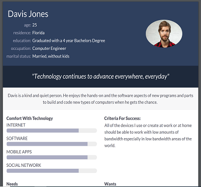
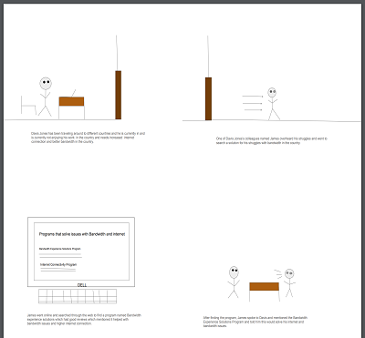
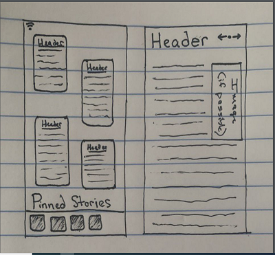
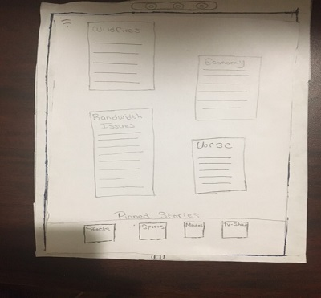
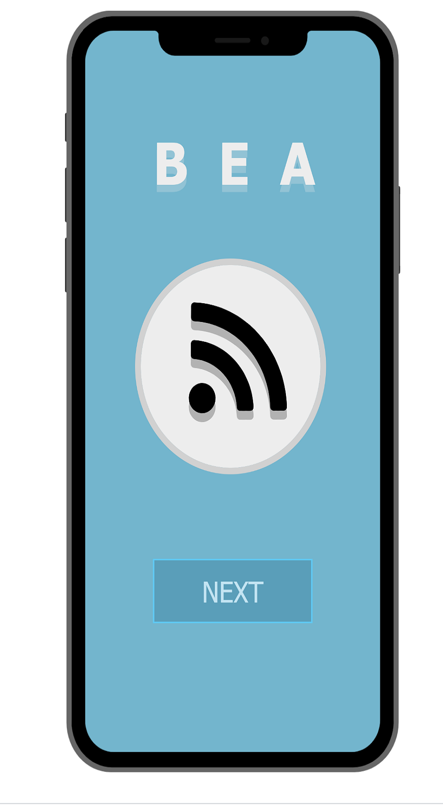

Problem Statement: Bandwidth Experiences

Users living in areas with lower-than-average bandwidth experience issues accessing larger files via the Internet, therefor making it difficult for them to access the news.
Affinity Diagram: Bandwidth Experiences


My group and I collaborated together to brainstorm all possible ideas which could help solve the issue of bandwidth that occurs in low bandwidth areas of the world.
Persona: Personas for Bandwidth Experiences
My group and I created our individual personas who are bandwidth experience users.
Storyboard: Bandwdith Experiences
My group and I created storyboards to illustrating the need for a bandwidth experiences app.
Sketch: Bandwidth Experiences
My group and I created sketches of potential app solutions for bandwidth experiences
Paper Prototype: Bandwidth Experiences App
A functional prototype on paper which we can use to ideate.
Usability Testing: Bandwidth Experiences App

A scenario and tasks and the outcome of usability tests.
Low-Fi Prototype: Bandwidth Experiences App

A low-Fi prototype of the bandwidth experiences app
Hi-Fi Prototype: Bandwidth Experiences App
A high fedility prototype which consists of detailed and polished screens of the bandwidth experiences app.